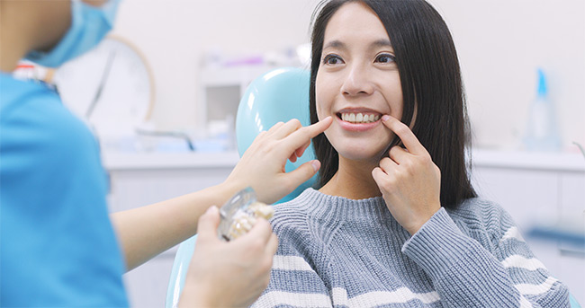
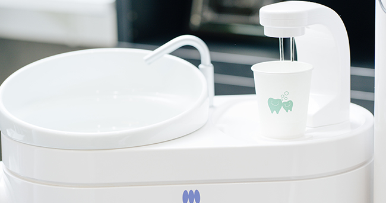
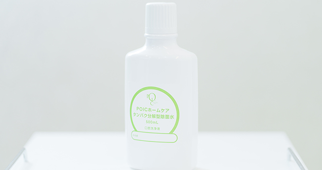

できるだけ患者様の負担を減らします
～レーザー治療器の活用～
三島駅・下土狩駅近くの歯医者「MI総合歯科クリニック」のコンセプトは、できるだけ歯を削らず、歯を残し、患者様に負担をかけないMI（ミニマルインターベーション）治療のご提供です。そのためにさまざまな治療や処置で活用しているのがレーザー治療です。
なるべく「歯を削らない治療」「歯の神経を残す治療」を可能に～ストリークレーザー～
ストリークレーザーとは、高出力レーザーと人体に影響がない特殊な「酸化チタン溶液」を組み合わせて、高温のプラズマ光球体をつくり、熱エネルギーを活用しながら患部への治療効果を高めるレーザー治療器です。虫歯菌に汚染された部分にだけ反応するので、健康な歯質を残せるうえ、プラズマの作用で歯の神経への刺激を抑えるため、痛みがほとんどありません。麻酔をせずに治療が可能なほどです。細菌の除菌を行うとともに、虫歯への抵抗力を高める「耐酸性」を高めるので、回復も早いというメリットがあります。
できるだけ歯を残す、できるだけ歯を削らない、できるだけ患者様への負担を減らすという当院のコンセプトを実現するために大きな役割を果たすのが、ストリークレーザーです。
ストリークレーザーにできる4つのこと
虫歯になりにくい強い歯に
虫歯になりにくい強い歯に
飲食するたびにお口の中は酸性に傾き、歯の表面のエナメル質の成分が溶け出す「脱灰（だっかい）」が起こります。そして唾液などの作用による「再石灰化」が起こり、「脱灰」と「再石灰化」がくり返されます。このサイクルバランスがくずれると脱灰がすすみ虫歯が進行するのです。しかしレーザー照射すると、歯質そのものの耐酸性（酸に対する歯の抵抗力）を高められるので、脱灰しにくい、虫歯になりにくい歯へと強化することが可能です。
重度の虫歯でも神経を残せる可能性が高まる
重度の虫歯でも神経を残せる可能性が高まる
歯の神経にまで虫歯の汚染が進んだ重度の虫歯は、歯を残すために歯の中の神経や汚染歯質を除去する「根管治療」を行います。この際、ストリークレーザーを活用すると、レーザー拡散効果によって根管内の細菌をすみずみまで除菌できるのです。すると神経を残すことも可能になります。また根管治療の精度を高め、同時に治療期間の短縮も期待できます。
冷たい物がしみる“知覚過敏”を解消
冷たい物がしみる“知覚過敏”を解消
エナメル質の内側にある象牙質には目には見えない細かい穴が開いています。象牙質は本来エナメル質で覆われていますが、加齢や歯周病、歯肉の後退などで象牙質がむき出しになっていると、小さな刺激にも敏感に反応してしまい「冷たい物が歯にしみる」などの「知覚過敏」の症状があらわれます。ストリークレーザーの照射により歯質を強化できるので、知覚過敏の症状から解放される効果が期待できます。
歯周病を少ない痛みで早期回復につなげる

歯周病を少ない痛みで早期回復につなげる
ストリークレーザーでのレーザー照射では酸化チタン溶液を使うので、歯と歯ぐきの間に入り込んだ歯周病菌がひそむ歯石やプラーク（歯垢）、バイオフィルムの分解・除去が可能です。これまで、外科処置で歯ぐきを切開して行っていた治療をしなくてもよくなるのです。さらにPOICウォーターを併用し、患者様の負担や痛みを小さく抑えながら治療ができ、そのうえ早期回復につなげられます。
殺菌力の高いPOICウォーターを使用
- 
- 
POICウォーターとは、お口の中の汚れ（たんぱく質）を分解し、洗浄し、除菌する特殊な水です。詳しくいうと、人間の血液中にも存在する免疫成分の次亜塩素酸（HClO）の成分を、高濃度の塩と水を電気分解してつくる電解機能水です。もともと塩と水でできているうえ、人体にも存在する成分なので、身体への悪影響はありません。
当院では、高い除菌力を持つ電解機能水を末端まで供給できる、EPIOSのエコシステムが導入されています。このシステムによって、洗浄・殺菌機能を持っているPOICウォーターが生成され、虫歯や歯周病の予防・治療効果を高めていってくれるのです。EPIOSのシステムのおかげで、院内で使用するすべての水がこのPOICウォーターとなっています。
当院ではこのほかに、ホームケア用のPOICウォーターも用意しております。自宅で日常的にPOICウォーターを使用していれば、常に口腔内を清潔な環境とすることができるため、虫歯・歯周病はもちろん、口内炎などの口内トラブルや、インフルエンザなどの感染病回避にも効果的です。また、POICウォーターはタンパク分解型除菌水となっているので、汚れを落としやすくする効果があり、日々の歯磨きの効果を高めてくれます。
料金表（虫歯治療でのレーザー治療費）
| CO：歯質強化、知覚過敏 | 20,000円 |
|---|---|
| C1：エナメル質の虫歯 | 30,000円 |
| C2：象牙質の虫歯 | 50,000円 |
| C3：神経保護、生活歯髄切断法 | 70,000円 |